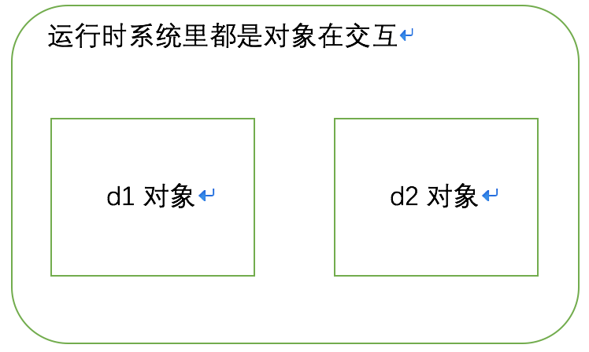

对象是在面向对象系统里的基本元素，通过各个对象之间的交互（互相发送请求消息）来实现面向系统的功能
方法 是一个操作或一个请求，包含名字，参数和返回值
接口 是一系列方法的集合，对象可以拥有接口，所以接口体现了一个对象所能完成的功能
类型 是一个接口的名字，可以理解为等同于接口，类型可以有子类型和父类性，当一个类型包含另一个类型的时即为子类型
类 定义一个对象，提供（多个）类型里方法的实现，这是对象的一个静态写照
对象 面向对象系统里运行时的基本元素，对象之间可以相互交互，对象是一个类的实例化，可以拥有多个类型
例如：
interfaced Duck { // 类型
void quark() // 方法
}
class ConcreteDuck implements Duck { // 类，定义了Duck类型的实现
static void quark() {
// real quark
}
public static void main(String[] args) {1l
Duck d1 = new ConcreteDuck();
Duck d2 = new ConcreteDuck();
d1.quark();
d1.quark();
}
}

封装 把数据和对数据的操作聚合起来形成一个对象
例如:
class Duck { // 把name和quark封装成一个对象
String name;
void quark() {
System.out.println(name + " quarking...");
}
}
继承 包括两个含义
类型继承举例:
interface Quarkable {
void quark()
}
interface Duck extends { // 类型继承
}
class ConcreteQuarkable implements Quarkable {}
class ConcreteDucke implements Quarkable {}
class Demo {
static void runDemo(Quarkable q) {
q.quark()
}
public static void main(String[] args) {1l
runDemo(new ConcreteQuarkable());
runDemo(new ConcreteDucke());
}
}
实现继承举例:
class ConcreteQuarkable {
void quark() { }
}
class ConcreteDucke1 extends ConcreteQuarkable { } // 继承了quark的实现
class ConcreteDucke2 extends ConcreteQuarkable {
void quark() { } // 重定义了quark的实现
}
多态 在运行时动态的替换拥有相同类型的对象，如上类型继承举例
继承 可以实现代码的复用，缺点：这是在编译时实现的代码复用，所以是一种相对运行时来说的静态复用，不够灵活;子类会破坏父类的封装性，并对父类的代码产生依赖；优点是简单粗暴
举例：
class HashSet {
...
void addAll(Collection c) {
for(Object o : i)
add(o);
}
void add(Object o) {
...
}
...
}
class BraokenSubSet { // broken cause dependency
int counter = 0;
@Override void add(Object o) { couter++; super.add(o); }
@Override void addAll(Collection c) { couter += c.size(); super.addAll(c); }
}
组合 可以实现运行时的对象功能复用，通过多态能更加灵活; 缺点是会增加对象的数量导致增加运行时的复杂性
举例：
interfaced Duck {
void quark()
}
class Demo {
Duck d；
Demo(Duck d) { this.d = d; }
void setDuck(Duck d) { this.d = d; }
void quark() { d.quark(); }
public static void main(String[] args) {
Demo demo = new Demo(new Duck(){
void quark() {
// implement version 1
}
});
demo.quark();
demo.setDuck((new Duck(){
void quark() {
// implement version 2
}
});
demo.quark();
}
}
委托 通过组合来复用代码的功能，但又不需要继承
例如:
interface Duck { void quark(); }
class ConcreteDucke1 extends Duck {
void quark() { }
}
class ConcreteDucke2 extends ConcreteQuarkable {
ConcreteDucke1 d;
ConcreteDucke2(ConcreteDucke1 d) { this.d = d; }
void quark() { d.quark(); }
}
参数化类型 把类型作为一种可变的参数，是的代码不依赖于类型
例如：List，Set，Map等
前提：视情况有取舍地使用这些原则，没有死规定
封装变化 把可变的部分封装成对象
例如：父类的两方法的实现在子类中存在着变化和重复时，应该单独封装
// Bad example
class Duck {
void fly() { System.out.println("Fly"); }
void quark() { System.out.println("quark"); }
}
class ToyDuck extends Duck {
@Override void fly() {}
@Override void quark() { System.out.println("toy quark"); }
}
class WildDuck extends Duck {
@Override void fly() { System.out.println("Fly Height"); }
@Override void quark() { System.out.println("quark loudly"); }
}
class CannotFlyWildDuck extends Duck {
@Override void fly() {} // 重复的代码
@Override void quark() { System.out.println("quark loudly"); } // 重复的代码
}
// Good Example
interface Quarkable { void quark(); }
class Normal implements Quarkable { void quark() { System.out.println("quark"); } }
class Silece implements Quarkable { void quark() {} }
class Loud implements Quarkable { void quark() { System.out.println("quark loudly"); } }
class ToySound implements Quarkable { void quark() { System.out.println("toy quark"); } }
abstract Duck {
Quarkable q;
Duck() { this.q = new Normal(); }
void quark() { q.quark(); }
void fly();
}
class Duck extends Duck {
void fly() { System.out.println("Fly"); }
}
class CannotFlyWildDuck extends Duck {
@Override void fly() {}
}
class ToyDuck extends CannotFlyWildDuck {
ToyDuck() { this.q = new ToySound(); }
}
class WildDuck extends Duck {
WildDuck() { this.q = new Loud(); }
@Override void fly() { System.out.println("Fly Height"); }
}
针对接口编程而非针对实现编程 包括2个方面：
多用组合，少用继承 对父类实现的依赖导致父类的修改影响到子类
为了交互对象之间的松耦合设计而努力 松耦合是指交互的对象之间不知道彼此的实现细节，只知道彼此拥有的接口，所以对象的具体实现的改变能互不影响
开放--关闭原则 已有代码应该对扩展开放，对修改关闭；集中精力实现最后可能改变的地方即可
依赖倒置原则 要依赖抽象的类型，不要依赖具体实现的类；编码时就是高层组件不要依赖底层组件
最少只是原则 尽量减少对象间的相互依赖，否则动一发而动全身；要遵守这个原则就应该之访问以下范围内的对象的方法：
好莱坞原则：别调用我们，我们调用你 高层组件决定怎样使用提供给底层组件的钩子
单一责任原则 一个类应该只有一个引起变化的原因